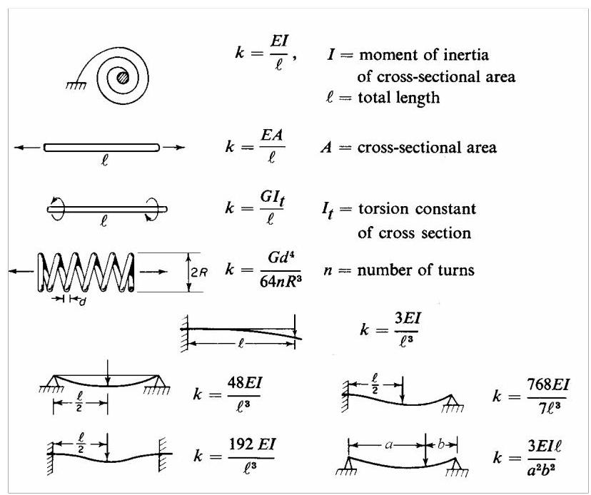
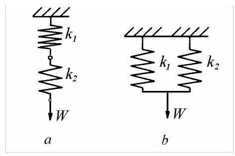
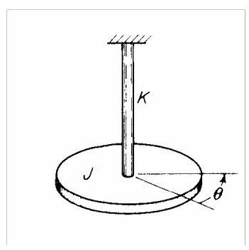
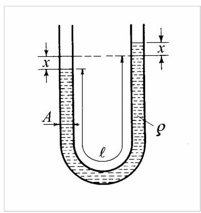

第2篇
公众号，洒家的动力学笔记
2.1.2 弹性元件的刚度
尽管将单自由度系统简化为质量块与单根螺旋弹簧相连的形式十分便利，但在许多实际系统中，弹簧可呈现多种形态，亦可由若干弹性元件组合而成。
图2.2给出了若干弹性元件的刚度计算方法：以施加力与其作用点位移之比表示。

图2.2
图2.3展示了两种常见的弹簧组合方式。

图2.3
对于串联布置（图2.3，\(a\)），各弹簧受力相等。刚度分别为\({k}_{1}\)与\({k}_{2}\)的两根线性弹簧，在承受重量\(W\)的静载时，总变形量为
等效弹簧常数，表征\({k}_{1}\)与\({k}_{2}\)的综合效应，为
对于\(n\)个串联弹簧的系统，等效刚度\({k}_{S}\)由下式给出
并联弹簧组合（图2.3，b）须满足各弹簧位移相等，且各弹簧所受作用力之和等于重量\(W\)：
因此，并联弹簧的等效刚度为
一般地，由\(n\)个并联弹簧构成的系统，其等效刚度为
弹簧刚度的组合规则与电气工程中计算串、并联电路总电容的规则完全一致。
2.1.3 扭转系统
考察图2.4所示的扭转系统：一质量惯性矩(mass moment of inertia)为\(J,\mathrm{\;{kg}}{\mathrm{\;m}}^{2}\)的圆盘，悬挂于扭转刚度为\(K,\mathrm{{Nm}}/\mathrm{{rad}}\)的杆或丝上，系统被限制为仅绕竖直轴作角振动。
设圆盘的瞬时角位置由角位移\(\theta\)给出，则作用于圆盘的扭矩为\(-K\theta\)，角运动的牛顿第二定律可写为
即
式中字母上方的点表示对时间求导。

图2.4
方程(2.15)由Ch. O. Coulomb于1784年建立，其通解形式为
其中
为扭转系统的无阻尼固有圆频率(undamped natural circular frequency)。
无阻尼固有频率为
由材料力学可知，直径为\(d\)、长度为\(\ell\)、剪切弹性模量为\(G\)的均匀轴，在扭矩\({M}_{t}\)作用下将产生扭转角\(\theta = \frac{{M}_{t}\ell }{G{I}_{p}}\)，其中\({I}_{p} = \frac{\pi {d}^{4}}{32}\)为轴截面的极惯性矩。于是扭转刚度为\(K = \frac{{M}_{t}}{\theta } = \frac{G{I}_{p}}{\ell }.\)
事实上，轴向振动系统与扭转振动系统之间存在完全的类比，弹簧与质量的对应物分别为扭转弹簧和具有极质量惯性矩的刚性圆盘。
2.1.4 能量法
若假设振动为简谐运动，则可通过能量关系计算其频率。当系统无能量耗散时，该系统称为保守系统。在任一瞬时，保守系统的能量为势能与动能之和，且保持恒定。
最大势能出现在极端位置，此时质量瞬时静止；该最大势能必须等于最大动能，后者出现在质量以最大速度通过静平衡位置时。
弹簧力为\({kx}\)，对微小位移\(\mathrm{d}x\)所做的功为\({kx}\mathrm{\;d}x\)。当弹簧被拉伸距离\(x\)时，其势能为\(U = {\int }_{0}^{x}{kx}\mathrm{\;d}x = \frac{1}{2}k{x}^{2}\)。设振动形式为\(x = A\sin {\omega }_{n}t\)，则最大势能为\({U}_{\max } = \frac{1}{2}k{A}^{2}\)。
任一瞬时的动能为\(T = \frac{1}{2}m{v}^{2}\)。速度为\(v = A{\omega }_{n}\cos {\omega }_{n}t\)，故最大动能为\({T}_{\max } = \frac{1}{2}m{\omega }_{n}^{2}{A}^{2}\)。
令\({U}_{\max } = {T}_{\max }\)相等，我们得到\(\frac{1}{2}k{A}^{2} = \frac{1}{2}m{\omega }_{n}^{2}{A}^{2}\)，由此得到固有频率\({\omega }_{n} = \sqrt{k/m}\)，它与振幅\(A\)无关。
示例 2.1
确定 \(\mathrm{U}\) 形管（图 2.5）中流体振荡的固有频率。
解：设流体柱总长度为 \(\ell\)，管道横截面积为 \(A\)，流体质量密度为 \(\rho\)。
假设所有流体粒子在任一瞬时的速度相同，则动能可表示为 \(T = \frac{1}{2}\rho A\ell\dot{x}^{2}\)。若流体来回振荡，所做的功等同于将长度为 \(x\) 的流体柱从管左侧移至右侧，其余流体保持不动。
瞬时势能为 \(U = g\rho A x^{2}\)。将这两个能量表达式代入总能量变化率必须为零的条件，
消去 \(\dot{x}\) 后，得到流体运动微分方程：

图 2.5
因此，固有频率为
该频率与所用流体种类、管形及其横截面积均无关。
2.1.5 瑞利法(Rayleigh's Method)
能量法(energy method)在具有分布质量和/或分布弹性的系统中的应用称为瑞利法(Rayleigh's method)。该方法用于将分布系统简化为等效的弹簧-质量系统，并求出其基频(fundamental natural frequency)。
动能和势能的计算基于满足几何边界条件的任意合理挠度曲线。若假设为振动系统的真实挠度曲线，则瑞利法求得的基本频率即为正确频率；若采用其他曲线，则所得频率将高于正确频率。这是因为任何偏离真实曲线的情形都需附加约束，意味着刚度增大，从而频率升高。下文将瑞利法应用于梁的弯曲振动。设一棱柱形梁，其弯曲刚度为\({EI}\)（其中\(E\)为杨氏模量，\(I\)为截面二次矩），单位长度质量为\({\rho A}\)（其中\(\rho\)为质量密度，\(A\)为截面面积）。假设横向挠度为简谐振动，频率为\({\omega }_{1}\)，沿梁各点同步。
瞬时势能为
其中已使用梁弹性线(beam elastic line)的线性化微分方程(5.65) \(M = {EI}\left( {{\partial }^{2}y/\partial {x}^{2}}\right)\)。
其最大值为
瞬时动能为
其最大值为
令最大势能等于最大动能，可得基频(fundamental natural frequency)的表达式